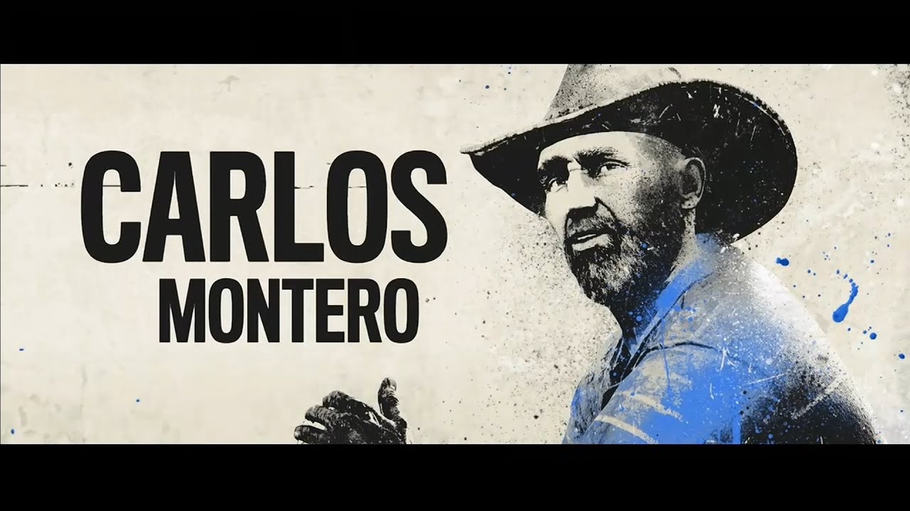

En "Far Cry 6", juegas como Dani Rojas, un guerrillero que lucha por la libertad de Yara, una isla ficticia gobernada por el dictador Antón Castillo. Castillo está decidido a devolver la gloria a su nación a cualquier costo, y es tu misión unirte a la revolución y derrocar su régimen. A lo largo del juego, te encontrarás con diversos personajes, cada uno con su propia historia y motivaciones.

Historia de Far Cry 6
Dani RojasDani Rojas es el protagonista de "Far Cry 6". Puedes elegir si Dani es hombre o mujer, pero independientemente del género, Dani es un joven de Yara que inicialmente solo quiere escapar de la vida bajo el régimen opresivo del dictador Antón Castillo. Sin embargo, tras un trágico incidente, Dani se une a la guerrilla llamada "Libertad" para luchar por la libertad de su tierra natal. Dani se convierte en un símbolo de resistencia y esperanza para los habitantes de Yara. |
|
Antón CastilloAntón Castillo es el dictador de Yara y el principal antagonista en "Far Cry 6". Interpretado por Giancarlo Esposito, Castillo es un líder carismático y despiadado que está decidido a restaurar la gloria de su nación a cualquier precio. Su relación con su hijo Diego, a quien está criando para que siga sus pasos, añade una capa de complejidad al personaje. |
|
Clara GarcíaClara García es la líder de la guerrilla "Libertad" en "Far Cry 6". Es una estratega brillante y una figura inspiradora para sus seguidores. Clara es una luchadora dedicada que hará todo lo posible para liberar a Yara del control de Castillo. |
|
Juan CortezJuan Cortez es un ex-espía y experto en guerrilla que se convierte en el mentor de Dani en "Far Cry 6". Con su experiencia en tácticas de guerra y su conocimiento de las armas, Juan es una figura clave en la lucha contra el régimen de Castillo. |
|
Diego CastilloDiego Castillo es el hijo adolescente de Antón. Criado bajo la sombra de su padre, Diego está atrapado entre la lealtad familiar y su propia moral. Antón quiere moldearlo para que siga sus pasos como futuro dictador, pero Diego muestra signos de duda y conflicto interno. Su evolución y decisiones son fundamentales para la historia, ya que representan una posible esperanza de cambio para Yara. |
|
Carlos MonteroCarlos Montero es el líder de una familia guerrillera que posee una profunda conexión con la tierra rural de Yara. Su conocimiento del terreno y su capacidad para movilizar a los campesinos son vitales para la lucha contra Castillo. Carlos y su familia representan la fuerza y la determinación de los yarenses que no están dispuestos a someterse al régimen opresivo. |
 |
Soundtrack de Far Cry 6
El soundtrack de Far Cry 6 es una mezcla de ritmos intensos y melodías conmovedoras que capturan la esencia de la lucha y la esperanza en Yara. A continuación, se presentan algunas de las mejores canciones del juego:
Further Up the RoadUna canción que refleja la lucha y la esperanza de los guerrilleros en su camino hacia la libertad. Con una mezcla de guitarras acústicas y ritmos de percusión, esta melodía inspira a seguir adelante sin importar las dificultades. |
|
Make It BundemUna colaboración vibrante entre Damian Marley y Skrillex, "Make It Bundem" es una explosión de energía y resistencia. Con su ritmo de reggae y dubstep, esta canción se ha convertido en un himno de lucha y determinación. |
|
Heat"Heat" captura la tensión y la adrenalina de los combates en Yara. Con una mezcla de ritmos electrónicos y una línea de bajo potente, esta canción acompaña perfectamente las escenas de acción más intensas del juego. |